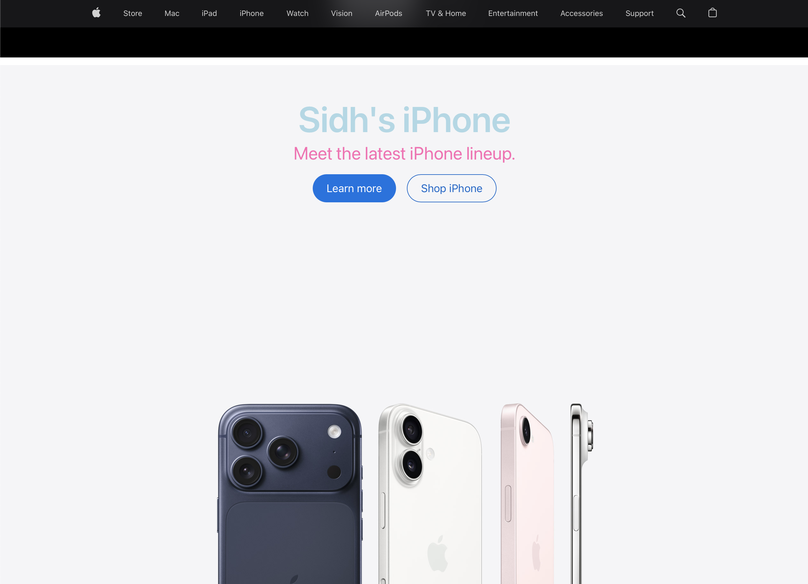

My Dev Tools Vandalism
I used browser developer tools to temporarily "vandalize" a website. Below is a screenshot showing my changes. These edits only appeared on my computer and did not affect the actual website.

What I "Vandalized"
I chose to vandalize apple.com. I used the Elements panel in the browser developer tools to change the main headline text on the page. I also went into the Styles panel and changed the color of the heading and the text underneath it, and increased the font size to make it much bigger. It was interesting to see how easy it was to change the look of a big website just by editing the CSS properties directly in the browser. The changes only showed up on my screen and went away as soon as I refreshed the page. This exercise helped me understand how HTML and CSS work together to control what a webpage looks like.